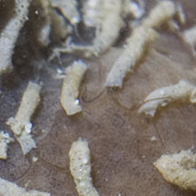

|
|
| worms text index | photo index |
|
worms > Phylum Annelida >
Class Polychaeta
|
| Spinoid
worms Family Spionidae updated Sep 2019 Where seen? Tiny ones that form tubes are sometimes seen encrusting sponges and other immobile creatures on the shore. Features: Spionids are generally small slender active worms. They have tentacles (palps) on the head that are used for feeding. Some may feed by gathering particles that deposit on the surface using a pair of long feeding palps that is grooved with tiny hairs (cilia) that transport the particles along the palps to the mouth. The palps may also be used to gather plankton and particles suspended in the water. Other spionid worms burrow in the sand. Spionoid worms may live in tubes made of sand or wander freely. Spionid sponge worms (Polydorella sp.)* can be common but are often overlooked. About 0.5cm long. Tiny short beige tubes. Often found in large numbers, encrusting a surface spacing themselves out regularly, at a distance equalling the length of their tentacles. |
 Tiny short pale tentacles. |

*Tentative identification. Species are difficult to positively identify without close examination.
On this website, they are grouped by external features for convenience of display.
| Spinoid worms on Singapore shores |
On wildsingapore
flickr
|
| Other sightings on Singapore shores |
|
Links
References
|